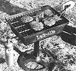

For backyard cookout convenience-and "Insurance" against power outages that could leave your kitchen inoperative-here's an inexpensive way to start . . .
Just about everybody loves a cookout, but broiling over charcoal can have some real drawbacks. You've got to wrestle with bags of sooty briquets . . . handle-with caution-the smelly and dangerous lighter fluid (that often ends up flavoring your food) . . . and then wait, as the young'uns clamor, for the coals to reach the proper stage for cooking.
Therefore, in terms of convenience, propane-fired grills are a pretty attractive alternative to charcoal. The fuel used in such devices is safely enclosed in a compact container . . . the burners light-and stay lit!on-a single match ... and the fire is ready for broiling almost immediately. The problem with the convenient cookers has always been price: The least expensive gas grills usually cost well over a hundred dollars, and many sell for twice that amount.
So, when we noticed an ad in our last issue for a barbecue grill that offers all of the advantages listed above and still sells for under $80 (shipping included), we decided to order one of the units and check it out. Called "Le Grille", the compact broiler has a 220-square-inch cooking surface ... comes with a sturdy base that adapts to three heights (9 inches for tabletop placement, and 18 or 30 inches for backyard cooking) ... is 100% cast iron . . . runs off a standard one-pound propane tank . . . and includes a free adapter for using an even more economical 20-pound fuel container.
You needn't sacrifice that smoky charcoal-broiled flavor when you cook with Le Grille, either. As you probably know, the aroma and taste that we associate with outdoor cooking is caused by the vaporization of fats dripping down onto the glowing coals. The propane grill gets the same effect with a tray of lightweight volcanic rocks that's positioned above the gas flame. As the "coals" get hot, the dripping fat is transformed into the familiar-and delicious-"charcoal" smoke.
What's more, the propane grill isn't just a convenience item. One MOTHER staffer was mighty glad there was a gas cooker in the house last winter, when a sudden ice storm brought down wires and made the electric range about as useful as wings on a pig! He just placed the grill in the fireplace and opened the damper ... lit a match and turned a knob . . . and soon the aroma of sizzling lamb chops filled the chilly darkness. A good hot meal can really make a difference in your outlook when the power is off and of man winter is howlin' up a storm! (Of course, when you're using any open-flame appliance indoors, always provide ventilation to maintain breathing oxygen for you and yours.)
EDITOR'S NOTE: Le Grille is available-for $79.95, postpaid-from BPS, Dept. TMEN, P.O. Box 199, Mountain Home, North Carolina 28758. (The firm asks that North Carolina residents add 4% sales tax to their orders.)
|
 Some of MOTHER's own staffers had a picnic putting ""Le Grille"" through its paces! |
|
|